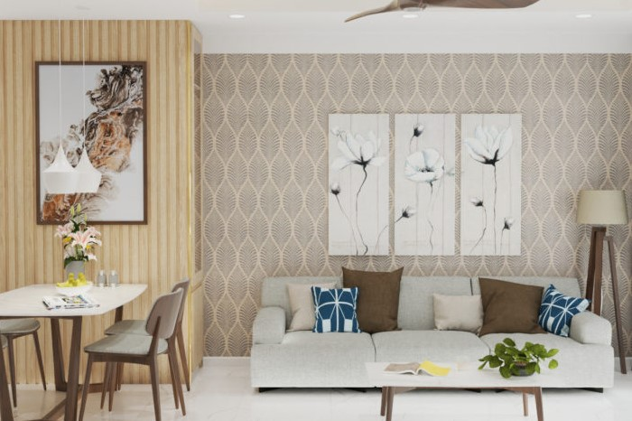
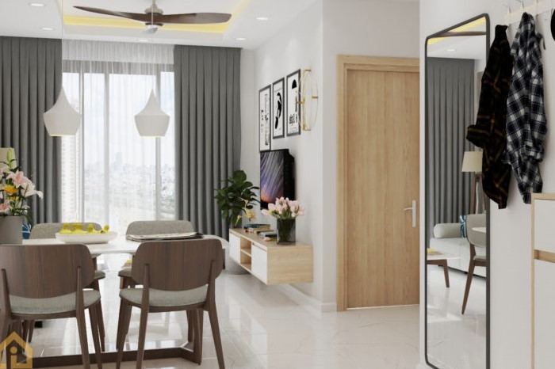

<div class="container project-view">

    <div class="row">
        <div class="col-md-8 project-images">
            
            
        </div>
        <div class="col-md-4">
            <div class="project-info">
                <h2>Thiết kế</h2>

                <div class="details">
                    <div class="info-text">
                        <span class="title">Mã thiết kế</span>
                        <span class="val">H 4</span>
                    </div>

                    <div class="info-text">
                        <span class="title">Loại thiết kế</span>
                        <span class="val">Nhà ở</span>
                    </div>

                    <div class="info-text">
                        <span class="title">Tổng chi phí</span>
                        <span class="val">$35,000</span>
                    </div>

<!--                    <div class="info-text">-->
<!--                        <span class="title">Client</span>-->
<!--                        <span class="val">Four Seasons</span>-->
<!--                    </div>-->

<!--                    <div class="info-text">-->
<!--                        <span class="title">Category</span>-->
<!--                        <span class="val">Hospitaly</span>-->
<!--                    </div>-->
<!--                </div>-->

                <p></p>

                <p>
                    <h4>Mô tả</h4>
                    Với lối thiết kế trung thành với tone chủ đạo vẫn là màu trắng kết hợp với màu hồng nhạt được xem là sự kết hợp kinh điển trong thiết kế nội thất. Sắc hồng là màu sắc tạo sự nhẹ nhàng và màu trắng là màu trung gian, căn phòng sẽ trở nên đầy tính nghệ thuật và êm ái nhưng không kém phần quyến rũ tác động mạnh mẽ vào thị giác, tạo nên dự hấp dẫn riêng cho căn hộ.
                </p>
                </p>


            </div>
        </div>
    </div>
</div>